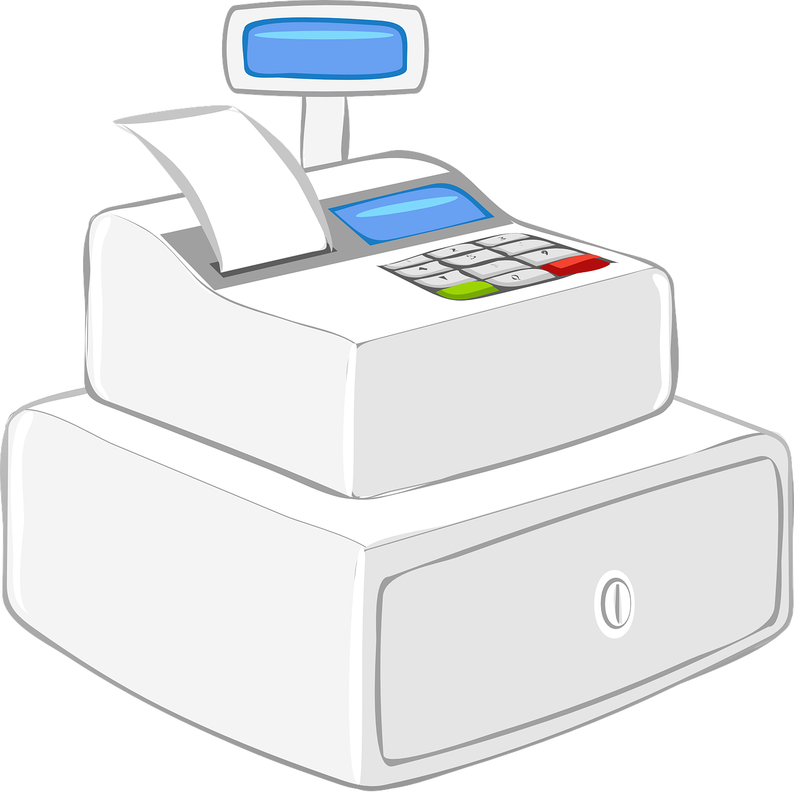

WYKUP I OSPRZEDAŻ MIENIA
Majątek obrotowy będący w posiadaniu firmy, bezustannie narażony jest na negatywne w skutkach
oddziaływania, wywołane przez nagłe i nieprzewidziane zdarzenia losowe (np. powódź, pożar,
zalanie, kradzież, niewłaściwy transport). W momencie kiedy tego typu sytuacja nastąpi, istotna
jest natychmiastowa reakcja, która pozwoli zminimalizować straty. Bardzo często przywrócenie
mienia do stanu sprzed szkody jest niemożliwe, bądź też ekonomicznie nieuzasadnione.
Niejednokrotnie, najlepszym rozwiązaniem jest odsprzedaż ruchomości specjalizującym się w tej
dziedzinie firmom. W takich przypadkach, służymy fachowym wsparciem.
Na podstawie przedstawionej przez Klienta dokumentacji, dotyczącej uszkodzonego mienia,
przygotowujemy ofertę jego wykupu. Jest ona ważna przez 30 dni od momentu otrzymania. Po
zaakceptowaniu warunków umowy wykupu mienia przez obie strony, ustalamy dogodny termin
realizacji zlecenia oraz sposób jego przekazania.
Przygotowujemy oferty obejmujące wykup i zagospodarowanie mienia z niemal każdej branży, w
szczególności:
- elektronika: sprzęt RTV i AGD, telefony i komputery
- maszyny budowlane,
- maszyny rolnicze,
- pozostałe środki obrotowe,
- produkty i półprodukty spożywcze oraz przemysłowe
Odsprzedaż mienia niepełnowartościowego, uszkodzonego w wyniku zdarzeń losowych, niesie wymierne
korzyści zarówno dla Zakładów Ubezpieczeń oraz samych poszkodowanych. Głównym i najważniejszym
zadaniem, które realizujemy w naszej działalności, jest oszczędność czasu i środków pieniężnych
naszych Klientów. Dzięki współpracy z naszą firmą oraz skorzystaniu z odsprzedaży awaryjnej
mienia, możliwe jest znaczne skrócenie procesu likwidacji szkody. Dzięki sprawnie
przeprowadzonemu procesowi wyceny oraz finalizacji oferty, następuje również redukcja kosztów
magazynowania oraz obsługi, niezbędnych do przechowywania uszkodzonego mienia oraz
wyeliminowanie wydatków i działań prowadzących do ewentualnej utylizacji mienia.